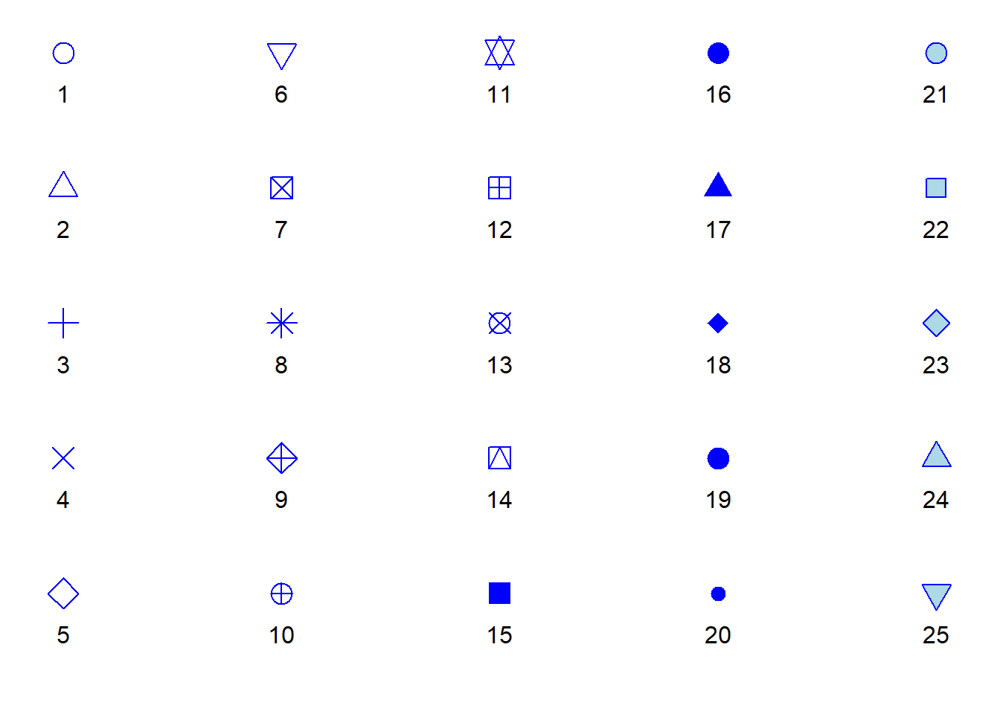
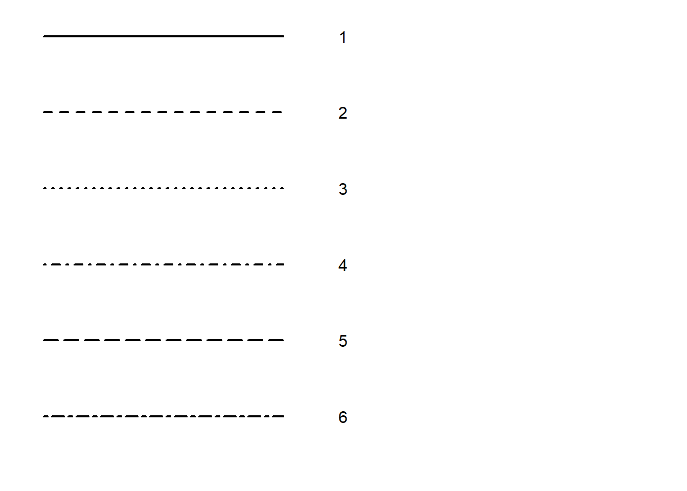

Making graphs in R
There are many ways to make graphs in R. Base R already contains functions that allow us to create plots, and there is a plethora of R packages that either contain some functions for plotting related to the core content of the package or even focus on plotting exclusively. As always, there is no right or wrong choice. How you make your graphs is very much a matter of preference.
On a very general note, base R provides us with very basic plots that do not necessarily look nice. However, it also gives us the most flexibility when it comes to modifying and enriching our graphs. Given enough experience, we can create very sophisticated graphs, line-by-line, point-by-point, and polygon-by-polygon in R using just the basic plotting functions included in base R. However, using base R is not necessarily efficient, so we may want to consider using specialised R packages for plotting.
The package that is arguably the most frequently used for visualisation of scientific data is ggplot2, and this is the package we will be using here. This package has been developed on the basis of the “Grammar of Graphics” (Wilkinson, 2005) and used a special syntax to reflect the core ideas of this grammar. In order to make sense of this syntax - and to better understand how to create plots using ggplot2 - is it important to get a basic grasp of this grammar of graphics.
A Grammar of Graphics
The idea underlying the grammar of graphics is graphics have a common principle. They are mappings from data (something abstract represented by numbers or categories) to aesthetics (things we can perceive visually, in this case). The aesthetics include the position in a coordinate system, but also information such as the shape, size, or colour of whatever object we want to plot. The different objects we can plot are geometric objects (geoms). They could be lines, bars, dots, to name just a a few. Plots in In ggplot2 have layers, that is, we build our plots, step-by-step, starting with an empty base plot to which we gradually add geoms until it looks the way we envision it.
Sometimes, it is sufficient to know which aspects of our data to make visible (aesthetics) and how to visualise them (geoms). However, formally, we also need to define the statistical transformation of our data for the purpose of plotting (stats). In some cases, we will use untransformed data (the so called “identity” transformation), while in other cases, we want to transform the data (e.g., by taking its logarithm), and in yet others we may want to summarise the data by taking its mean or median.
In sum, when we use ggplot2, the aestheteics, geoms, and stats are the ingredients of our plots. Now all we need to do is learn how to define the aesthetics, which geoms there are at our disposal (we won’t be using half of them), and which stats we need to use to make informative plots.
In ggplot2, we will use either functions of type geom_ that come with built-in and modifiable stats arguments or stats_ functions that come with built-it in and modifiable geom arguments. This illustrates that we always need to define both stats and geoms when plotting with ggplot2.
Fun fact: The corresponding stats_ and geom_ functions of ggplot2 are interchangeable. Which one we want to use is up to us.
Creating plots with ggplot2
Irrespective of what type of plot we want to create, the first step is always to create a base plot. We do so by calling the ggplot() function from ggplot2. The ggplot() function requires two function arguments:
- data (required): a data frame. We need to tell the function where our data is stored.
- mapping (optional): this function argument tells the function the aesthetics. It requires a function call of another function,
aes()(for aesthetics); if specified, defines the default mapping for all layers we will add to the plot; if not specified, we need to specify the aesthetics separately for each layer.
The aes() function that we need to feed into ggplot() for its mapping argument, takes the following arguments:
- \(x\) (required): the variable that goes on the x-axis of our plot.
- \(y\) (depending on plot type): the variable that goes on the y-axis unless the plot type predefines what goes there (e.g., frequency in a histogram).
- \(colour\) (optional): the variable that determines the colour of some geoms (points, lines); for some geoms such as bars, this arguments translates to the border colour.
- \(fill\) (optional): the variable that determines the colour of some geoms (bars, violins); if the geom is a two-dimensional object, this is the colour in which we fill the shape, as opposed to its border colour (this is defined by colour).
- \(size\) (optional): the variable that determines the size of some geoms (points, lines).
- \(shape\) (optional): the variable that determines the shape of points.
- \(linetype\) (optional): the variable that determines the type of lines.
That base plot is an empty plot. While we already define which variables will go on the axes for our plots and which variable we will use to define aesthetics such as the size, colour, or shape of potential geoms, the plot itself will be empty. Why? Because we are yet to add a layer containing a geom. That said, what information we put into the code for the base plot will already depend on the type of plot and how we want to represent the variables of our data. For example, we need to specify what goes on the x-axis and the y-axis for scatterplots and line diagrams, but not for histograms (for them, we only need the specify what goes on the x-axis). Likewise, whether we specify a third variable to determine the colour, size or shape in a scatterplot very much depends on whether we have a third variable to classify data by or whether we consider it sensible to include it.
Put differently, while the first step is always to create an empty base plot, the specific code for this plot differs slightly depending on which information we want to represent (data) and how we want to represent it (geoms and stats).
A note on colours in R
Before we delve further into the realm of plots, it is useful to talk about colours, and how they are implemented in R. In fact, R has several ways to specify colours. Here we will look the the two most commons ones: we can specify colours using colour names as character strings or via RGB-values (Red-Green-Blue values).
R has a list of colour names that are represented as character strings. This includes the basic colours such as “blue” and “green”, but also differently shaded (and oddly named) variants such as “blanchedalmond” and “darkseagreen”. Here is a list of the colours implemented in this fashion:

The alternative to calling colours by name is to call them by their RBG-values. In the RGB model, a colour is expressed in terms of its red, green, and blue component. In R, these components are defined as hexadecimal numbers ranging from 00 (a decimal zero) to FF (a decimal 255). The RGB code in R is a character string, in which we precede the RGB values with a hash (#).
For example the character string ‘#FF0000’ translates to RGB values of 255, 0, and 0, which means 100% red, 0% green, and 0% blue. This would be equivalent to calling the colour “red” in R. If we called the colour ‘#00FFFF’, the colour would have 0% red component and 100% of each green and blue. We call this colour cyan. Setting all three components to zero will yield black, setting them all to FF will yield white, and setting them, to equal values in between will produce various shades of grey. Using RGB codes to specify colours in R may take some getting used to, but the good news is that there are tons of resources on the internet showing different colours along with their RGB codes (for example, QUB has a corporate branding site that defines which colours we should use in official materials along with the respective RGB codes).
RStudio has a convenient feature when we write R scripts: it immediately displays the colour for a character string that specifies RGB values (see below).

A final thing to note is that some geoms in R have only one colour while others have two, a border colour and a filling colour. Geoms that have only one colour include lines and most types of points. We can determine their colour via the colour function argument. Other geoms such as bars, circles, and polygons have a border colour which is separate from their filling colour. For those geoms, we can define the border colour via the colour argument and the filling colour via the fill argument.
Point shapes in R
When plotting in R, the term “point” is a broad category of symbols that can, but do not have to be, actual points. We can choose from a range of symbols that are implemented n the points() function from base R. Most R packages that revolve around plotting, and that includes ggplot2, use those exact symbols, so it is good to know what they are. We can determine which symbols to plot via the shape argument. Each symbol is represented by a numeric value as shown in the list below. For example a shape value of 19 (the default value) is a large point. Note that the colour of the ‘points’ in the list below is set to blue (‘#0000FF’ or ‘blue’ in R terms) whereas the fill argument is set to light blue (‘#ADD8E6’ or ‘lightblue’). If the respective shape has only one colour in the list below, we can control this colour with the colour argument of geom_points(); if it has two colours (shapes 21 to 25), we can toggle the border colour with the colour argument and the filling colour with fill.
A note on line types
A final thing to consider is that we can draw different types of lines in R. Whenever we add geoms that consist of or include lines, we can toggle the type of the line via the linetype argument. Line types are represented as numeric values as shown below.

References
Wilkinson, L. (2005). The Grammar of Graphics. 2nd ed. Statistics and Computing. Springer.